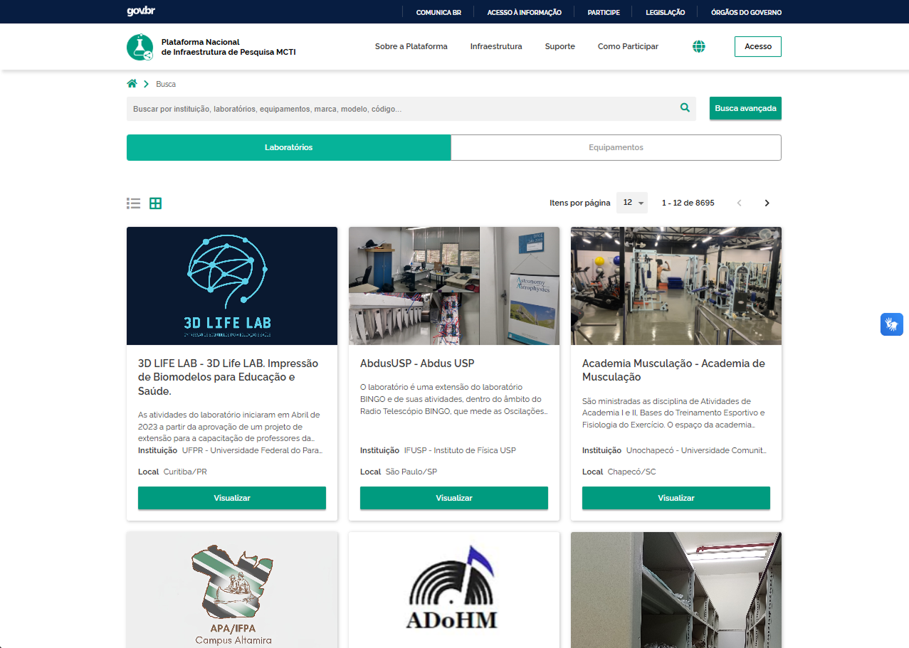

Overview
Brazil had no unified way for researchers to find and access scientific equipment across institutions. Each laboratory had its own informal process, some open to sharing, others not, all undiscovered by anyone outside. PNIPE was the government's strategic answer: a national catalogue that would make the country's research infrastructure visible, accessible, and shareable.
As the product designer at RNP, I led the MVP design working across a fragmented team of three organizations, the Ministry of Science and Technology, RNP, where I worked, and an external engineering firm.

Discovery & user research
The first challenge was understanding how researchers currently accessed external equipment. There was no system, researchers would identify a potentially relevant lab, reach out directly, wait to hear whether the equipment existed, was available, and whether the lab would even allow sharing. Each institution had its own informal process, with no standard way to accept or refuse requests.
Focus groups with researchers, lab managers, and policymakers surfaced two core tensions: labs wanted flexibility to describe their own equipment and policies; researchers wanted consistency to search and compare. Solving both at once was the central design problem.
The range of what counted as "equipment" made the catalogue especially complex, from a single microscope to a full research facility that could be treated as an equipment itself. The registration system had to accommodate very different needs into one single form.

Collaborative design process
The team was spread across three separate organizations with no shared tools and no shared physical space. I advocated for migrating to Figma, not primarily as a design tool, but to create the conditions for real-time collaboration across the Ministry, RNP, and the engineering firm. Using interactive prototypes, we tested ideas quickly, validating workflows with real users and giving stakeholders something concrete to react to.

Solution design
The MVP focused on two things: discoverability for researchers, and registration flexibility for labs. Rather than enforcing a rigid equipment taxonomy, we designed a structured but extensible system that let lab managers properly represent their infrastructure, whether that meant a single instrument or an entire specialized facility.
Platform Features
The platform makes Brazil's research infrastructure transparent and accessible, connecting universities and research centers while giving the Ministry a powerful tool to guide policy and foster innovation nationwide.

Government design system
A flexible design system adapted from government guidelines ensured consistency across the platform and future iterations.

Implementation & evolution
Post-launch, we tracked behavior through Google Analytics and support feedback to prioritize improvements to registration and search flows.
Covid-19 response
In early 2021, the Health Ministry was mapping logistics for vaccine distribution to isolated areas, identifying universities near remote regions that could serve as temporary cold-storage points if distribution chains failed. The ask came with a one-week deadline.
I adapted the existing equipment registration journey to include a flag where lab managers could indicate whether their facility could support vaccine refrigeration. On top of this, I designed a government-facing dashboard that let the Ministry monitor registered capacity across the country in real time, built entirely on top of what already existed in PNIPE, with minimal new infrastructure.

Impact & Outcomes
This project demonstrated how design can enable collaboration on a national scale. By making research infrastructure transparent and accessible, the platform connected universities and research centers while giving the Ministry a powerful tool to inform policy and drive innovation across Brazil.
- Research Connectivity: Connected universities and research centers across Brazil
- Policy Intelligence: Provided Ministry with data to shape science policy and infrastructure investments
- Resource Optimization: Enabled better utilization of existing research infrastructure
- Innovation Acceleration: Facilitated collaboration that drives scientific advancement
2025 data from website
Key Learnings
Designing for distributed authority
The team spanned three separate organizations, the Ministry owned the product vision, RNP owned the business side, and an external firm handled engineering. No shared tools, no shared physical space, and decision-making authority spread across all three. Advocating for Figma in this environment wasn't about tooling, it was about creating the conditions for a shared vision to exist at all. That shift changed how the whole team worked together.
Navigating immature standards
The Brazilian government design system was built for institutional websites, not products. Building a search-and-catalogue system within those constraints meant constantly working at the edge of what the guidelines anticipated, staying compliant while creating patterns the standards hadn't yet addressed.
Designing under new regulation
LGPD, Brazil's data privacy law, had just come into effect. Making sure a platform that collects and shares institutional and researcher data was compliant with a law still being interpreted in practice was a live challenge, one that shaped decisions around registration flows and data visibility throughout the project.